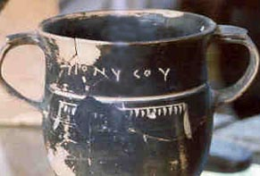
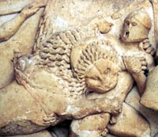
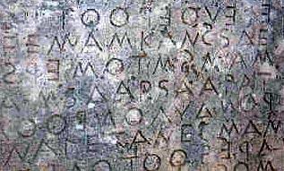

|
|
|
|
Students of Ancient Greek approach this discipline for a variety of reasons. They appreciate the beauty, clarity, and concise nature of the language, or they are fascinated with the culture which has had such an impact upon our own and to which we have exceptional access through its abundant linguistic and archaeological record. In order to have a better understanding of this culture and its literature, they need to read and comprehend its texts, not merely translate them word for word. To this end classicists, archaeologists, philosophers, historians, theologians, and anyone with an avid interest in the Graeco-Roman world will want to develop the tools for approaching a Greek text, whether it is an Homeric epic, a tragedy of Euripides, a philosophical treatise of Plato, a history by Thucydides, or an inscription on a monument or painted vase.
 Traditional textbooks for learning Ancient Greek often focus on the acquisition of grammar and syntax largely out of context, often with complicated explanations. More recently, the varied linguistic preparation of students and changing pedagogy have led to the development of reading and even oral methods.
In these times, it can no longer be assumed that college bound students will have a thorough background in formal English grammar and Latin or that they will know the Homeric and Vergilian epics in translation. With the explosion of computer technology and information retrieval we no longer learn primarily by rote memorization, lecture, and book reading. Our current situation warrants a re-evaluation of teaching goals and methods.
Years of experience in teaching Ancient Greek have led us to prefer a reading approach, in which students acquire grammar and vocabulary in the context of continuous Greek passages with cultural value. In our experience, we have found that Thrasymachus by Peckett and Munday (initially published in 1965; published by Bristol Classical Press in 1984 and reprinted in 1990) is a superb introduction to ancient Greek because it requires students to learn grammar and vocabulary in context. The continuous narrative fosters a steady, gradual acquisition of grammar and vocabulary and supports the development of skills which transfer readily to the reading of Greek literature. Students genuinely enjoy the readings as they are introduced to themes from Greek myth, tragedy, and epic. These lead easily to classroom discussions and further explorations. It is the intellectual excitement generated by Thrasymachus that gives purpose to the effort of learning the intricacies of ancient Greek.
Realizing that our students come to us with varied linguistic backgrounds and abilities and often needing to teach English to make the Greek understandable, we saw the need for providing a supplementary text to accompany Thrasymachus which would address these issues. This on-line supplement is intended especially for those who have begun their study of Greek without prior work in Latin and for those whose knowledge of English grammar may be less than thorough. It will also serve students who would benefit from further explanations of grammar or from exercises and structured review.
In our experience students who use Thrasymachus for their introduction to Greek benefit the most from working their way through the reading as its authors intended. Students begin by reading a chapter, with the primary purpose of understanding the story, together with an instructor who helps by identifying new forms or introducing new vocabulary. It is only after they have encountered new forms and syntax in context that the students learn the forms and grammatical points in isolation. It is the initial process of reading and comprehending, not just translating word for word and memorizing forms, that is most important for continuous progress in learning Greek.
We have designed this supplement to explicate and reinforce the material presented in Thrasymachus after the students’ initial reading. We begin by providing information on grammar — definitions, explanations, and examples from both Greek and English — referring to the information in Thrasymachus when appropriate. Forms are then presented, and exercises based closely on the Thrasymachus readings or on passages from Greek authors which appear at the end of the textbook. Lists of vocabulary drawn from the reading in each chapter are provided in Thrasymachus. Students will find that the most important words for a beginning vocabulary are repeated in the text of each chapter and that rereading a chapter will facilitate the learning of this vocabulary.
Because we see this supplement to Thrasymachus as an introduction to Ancient Greek, we have aimed for clarity and simplicity. We expect that students will gain a solid foundation upon which to understand the new material in the readings and to pursue a thorough mastery of the language in subsequent study. At this stage, for example, we emphasize the memorization of only the most basic forms and of those that are particularly difficult to distinguish from one another. We encourage the recognition in context of other forms. Also, we avoid the use of ponderous terminology, which can overwhelm or discourage beginning students. Examples and exercises are repetitive in grammar and vocabulary, and often simple in structure. This simplicity, we believe, will allow greater clarity in the presentation of new concepts and grammar, since students will not be discouraged by lengthy practice sentences and copious vocabulary when they are trying to master a new grammatical point.
It is crucial for students to understand the process of approaching an ancient Greek text: always to read through the passage or portion of it (a sentence or two) at least once or twice before beginning to do a careful reading. Only when the structure of that segment is seen can one begin to analyze or make a translation. It is best not to start by searching for the subject, verb, and direct object. (This process will be expanded and discussed later in our supplement). Often, word-for-word translations fail to convey the meaning of the Greek. Thrasymachus and our supplement are directed toward the learning of grammar, syntax, and vocabulary in context for an effective reading of Greek, which in turn will foster a growing understanding of this remarkably rich ancient culture.
 Thrasymachus and our on-line supplement offer flexibility to instructors and to students at various stages in their study of ancient Greek. Given the particular make-up of the class and the instructor’s focus, for instance, the readings can generate any amount of grammatical review, etymological work, and discussion of mythology and literature. Exercises in the supplement can be done together or as out of class assignments. For students with a prior knowledge of Greek, the readings and supplement together can provide a thorough review.
Before you embark upon your study of the Ancient Greek language, some general information will be helpful.
The alphabet of English is that of the Romans, which differed from the alphabet the Greeks developed and still use. (The word “alphabet” derives from the Greek names of the first two letters, alpha and beta.)
 There are several methods for learning the Greek alphabet. Some students prefer to study the alphabet from alpha to omega, as seen in Thrasymachus pp. x-xi and practice reading and writing individual letters and words. Other students benefit from looking at words in context (for instance, the Plutarch passage; see under EXERCISE below) with the guidance of their instructor, determining, for example, which letters are similar to their Roman equivalents and repeating the words in order to reinforce the identification of the letters.
See Thrasymachus p. xi for discussion of the pronunciation of Ancient Greek. There has been, and probably always will be, scholarly disagreement as to pronunciation. We encourage you to read Greek aloud as much as possible, and we suggest that you imitate the pronunciation of your instructor. Once you are comfortable with reading Greek, you will find that reading a passage aloud before working on its meaning will be very helpful.
See Professor Donald Mastronarde's audible Pronunciation Guide and Pronunciation Practice for help with pronunciation.
"XAIPE"
See Thrasymachus pp. 275-6 for a discussion of Greek accents. Obviously, in English a word consists of specific letters in a specific order. In Greek this is true as well but in addition each Greek word includes one of three types of accent and, if it begins with a vowel or rho, a mark over that letter to indicate smooth ( ) ) or rough (( ) breathing. While the smooth breathing mark indicates no change in pronunciation, the sound of the rough breathing mark is that of the letter "h" in English. Note the difference between "otter" and "hotter".
For more details, see Professor Mastronarde's Accentuation Tutorial and Accentuation Practice.

I.. With the instructor, read aloud “The Ostracism of Aristides the Just” by Plutarch, found on page 106 of Thrasymachus.
(The practice of ostracism, from which the English word and its cognates are derived, developed from an Athenian political device designed to preserve public order. When several individuals were seen as becoming too powerful, a vote was held to determine who was the most dangerous. The person receiving the most votes was exiled. Broken pieces of ceramic, known as ostraka [o)/straka] were used for voting.)
II. Try to identify each of the letters (all upper case) in this quotation from Thucydides at the modern tomb of the unknown soldier in Athens:
"Of famous men, the whole world is the tomb." III. Try to identify some of the letters in this inscription from Delphi, which warns spectators against bringing wine into the stadium. The amount of the fine in drachmas has been highlighted (PENTE DRAXMAS).
IV. Look closely at this red figure vase painting of Hermes by Euphronius and observe the spelling of his name in the late sixth century BCE:
Greek is similar to English in some of its vocabulary, grammar, and syntax. You will encounter many Greek words whose meanings you can deduce by your knowledge of the English derivatives: a)kou/w ("I hear," acoustics), for instance, and a!nqrwpoj ("man," anthropology, the study of mankind). Conversely, your English vocabulary will most likely be enhanced by your development of Greek vocabulary. In addition, sentence structure of the two languages is often similar as are certain constructions, such as adjectival degrees of comparison (tall, taller, tallest).
Greek differs from English, however, in that it is a highly inflected language. In simplest terms, this means that you will see Greek words with several different spellings. This is a fundamental concept for understanding how Greek "works." It will be important from the very beginning of Thrasymachus.
We hope that you will enjoy your study of the Ancient Greek language and that your knowledge will enable you to enjoy a great variety of Greek writing and thought.
Ann Thomas Wilkins and Alison W. Barker
mhde\n a/)gan "Nothing in excess"* Forward to Chapters I and II Back to Contents